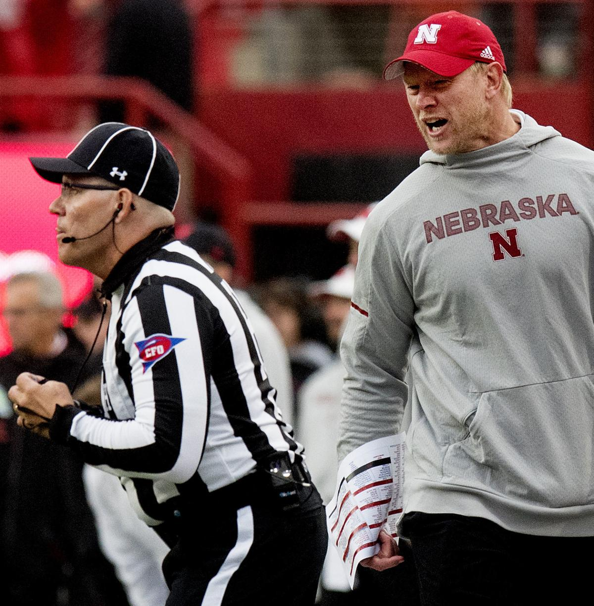

Welcome to the rules page
The rules are as follows...
Rule #1
At the beginning on the season, each participant will choose wins and losses for each game encompassing the entire season. For each correctly guessed game, the participant will receive 1(one) point.
Rule #2
Each participant will choose either Over or Under the spread as of the Thursday before the game. The spread will be based off of the website
Vegas Insider. If the participant correctly guesses Over/Under the spread, they will receive 1(one) point.
Rule #3
The season will conclude after the Iowa game. At this point the total points accumulated during the season will determine the winner.
Rule #4
Tiebrakers... 1) The number of times the spread was correctly predicted. 2) Closest to total offense that was predicted. This will be calculated from
Husker Max.Rule #5
If the two participants are still tied at the end of the season, the two participants will share the punishment.
Rule #6
The punishment will include both of the following situations. First, the loser must sit in an Iowa Hawkeyes chair every Thursday until the CFP Final. The chair must also be sat in the Thursday of the Spring Game. The chair will come back into rotation the first Thursday before the following Fall season. The second punishment will be having the infamous hairy clown doll positioned at the losers desk year around.
